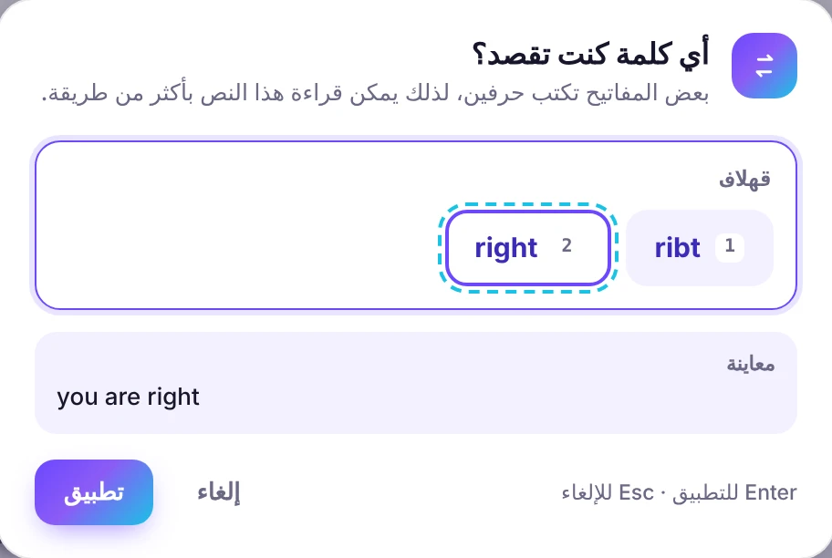
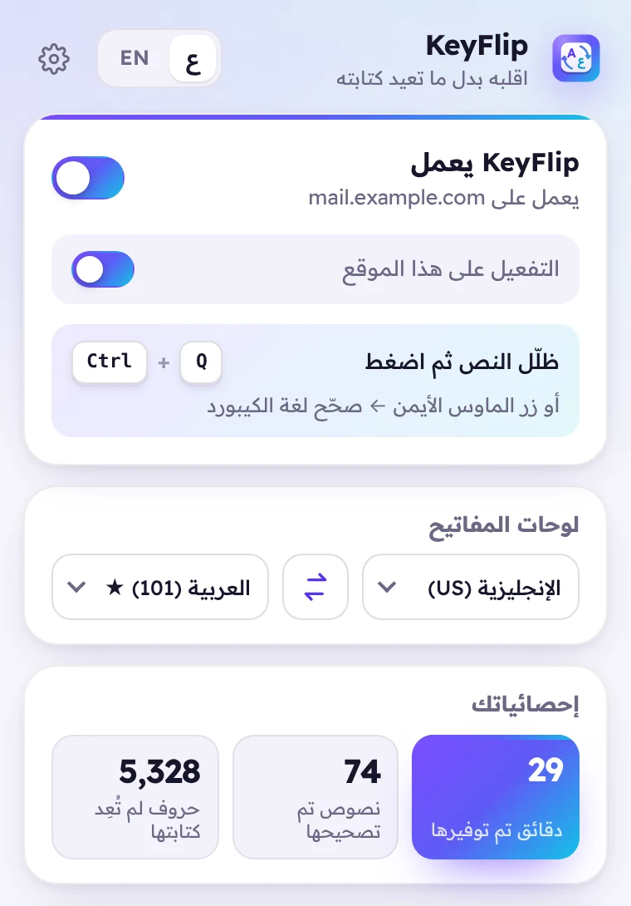

Ctrl+Q
1
اختصار لوحة المفاتيح
ظلّل النص واضغط Ctrl+Q. لم تظلّل شيئاً؟ يصحّح KeyFlip مربع الكتابة كاملاً.
على الماك الاختصار ⌃ Control + Q، لأن ⌘ Q يُغلق المتصفح.
إضافة مجانية للمتصفح
ظلّل النص الغريب واضغط Ctrl+Q، فيعيد KeyFlip كتابته باللغة الصحيحة في نفس مكانه — بلا حذف ولا إعادة كتابة.
يعمل على Chrome · Edge · Brave · Opera
ثلاث طرق للتصحيح
ظلّل النص واضغط Ctrl+Q. لم تظلّل شيئاً؟ يصحّح KeyFlip مربع الكتابة كاملاً.
على الماك الاختصار ⌃ Control + Q، لأن ⌘ Q يُغلق المتصفح.
;dt phg;
اقلبEN → عظلّل نصاً يبدو غريباً فيظهر زر صغير مع معاينة للنتيجة. ضغطة واحدة وانتهى الأمر.
تفضّل الماوس؟ اضغط على النص بالزر الأيمن واختر صحّح لغة الكيبورد.
جرّبها هنا
اكتب أو الصق نصاً مكتوباً بلغة الكيبورد الخطأ، ثم اضغط Ctrl+Q أو زر اقلب. هذا هو محرّك الإضافة نفسه، ويعمل على جهازك.
نصيحة: ظلّل جزءاً من النص لتقلب هذا الجزء فقط.
ذكي، وليس سريعاً فقط
في الكيبورد العربي لحرف «لا» زر خاص (B)، ويمكن كتابته أيضاً «ل» ثم «ا» (G H). لذلك قد تكون «قهلاف» ribt أو right. يفحص KeyFlip قائمة كلمات ويختار الكلمة الحقيقية، وإن لم يكن متأكداً يسألك مع معاينة فورية.

ويندوز أو ماك
ترتيب الأحرف العربية في الماك لا يطابق ويندوز، فكثير من الأحرف على أزرار مختلفة. يكتشف KeyFlip نظامك ويختار الكيبورد الصحيح، وإن لم تكن متأكداً فاضغط زراً واحداً أثناء الإعداد وهو يعرف.
نفس الأزرار، أحرف مختلفة
على بُعد نقرة
شغّل KeyFlip أو أوقفه، أوقفه على موقع معيّن، بدّل لوحتي المفاتيح، واعرف كم وفّر عليك من وقت.

كل ما تحتاجه
كل تصحيح يُسجَّل في سجل التراجع العادي، وCtrl+Z يعيد النص الأصلي.
مربعات النص، البحث، المحادثات، البريد، المحررات المنسّقة والإطارات المضمّنة.
العربية والفارسية والأردية والعبرية والفرنسية والألمانية والروسية والتركية والإنجليزية، بنسخ ويندوز وماك.
غيّر الاختصار، أخفِ الزر العائم، أو أزِل خيار الزر الأيمن.
اضغط الاختصار مرة ثانية فيعود النص كما كان.
وصلتك رسالة كلها طلاسم؟ ظلّلها فيعرضها KeyFlip مفهومة في بطاقة.
تصميم حقيقي من اليمين إلى اليسار، مع وضعين فاتح وداكن.
نصك لا يغادر جهازك أبداً. لا خوادم، لا حسابات، لا تتبّع.
جولة في 15 ثانية
لوحات المفاتيح
USUK
ويندوز (101)ماكماك QWERTY
ويندوزماك
ويندوز
ويندوزماك
AZERTY · ويندوزAZERTY · ماك
QWERTZ · ويندوزQWERTZ · ماك
ويندوزماك
Q
الخصوصية
يعمل KeyFlip بالكامل داخل متصفحك. لا يقرأ النص إلا عندما تطلب تصحيحه، فيحوّله في الذاكرة ثم ينساه.
احصل على KeyFlip
تريدها اليوم؟ ثبّت النسخة المبكرة في أقل من دقيقة:
chrome://extensions في Chrome، أو edge://extensions في Edge.الإصدار 1.1.0 · آخر تحديث 15 أكتوبر 2026
النسخة المبكرة لا تتحدّث تلقائياً: نزّلها من جديد لتحصل على آخر إصدار.
Chrome · Edge · Brave · Opera — على ويندوز وماك ولينكس وكروم أو إس
أسئلة
نعم، مجاني بالكامل، بلا إعلانات ولا نسخة مدفوعة.
لا. التحويل يتم على جهازك ولا يُرسَل أي شيء. KeyFlip لا يتصل بالإنترنت أصلاً.
هكذا تصف المتصفحات أي إضافة تستطيع تصحيح النص داخل الصفحات التي تكتب فيها. يستخدمها KeyFlip فقط عندما تضغط الاختصار أو الزر العائم أو خيار الزر الأيمن.
⌃ Control + Q، وليس ⌘ Command + Q لأنه يُغلق المتصفح. ويمكنك تغيير الاختصار من الإعدادات.
Chrome و Microsoft Edge و Brave و Opera، على ويندوز وماك ولينكس وكروم أو إس.
لا تسمح المتصفحات لأي إضافة بتعديل صفحاتها الخاصة (الإعدادات، متاجر الإضافات، صفحة التبويب الجديد) ولا عارض PDF المدمج. في هذه الصفحات يفتح الزر الأيمن نافذة KeyFlip بالنص المصحّح جاهزاً للنسخ. كذلك المحررات التي ترسم النص كصورة بدل مربعات نص حقيقية لا يمكن تعديلها.
نعم. ظلّلها في الصفحة واضغط الاختصار، فيعرضها KeyFlip مفهومة في بطاقة صغيرة.
لا، KeyFlip إضافة لمتصفحات الكمبيوتر.
جملتك القادمة المكتوبة بالكيبورد الخطأ على بُعد اختصار واحد من الصواب.